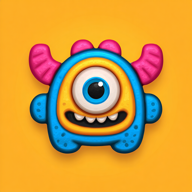
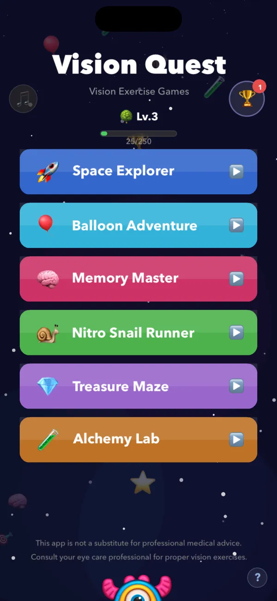
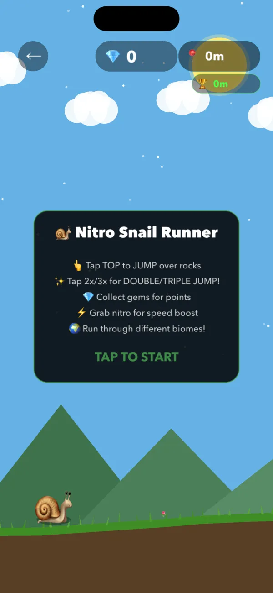
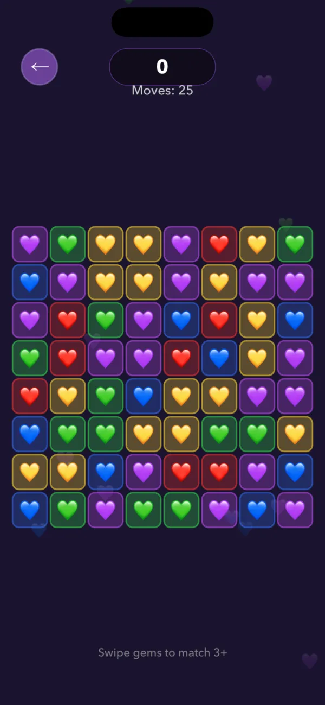
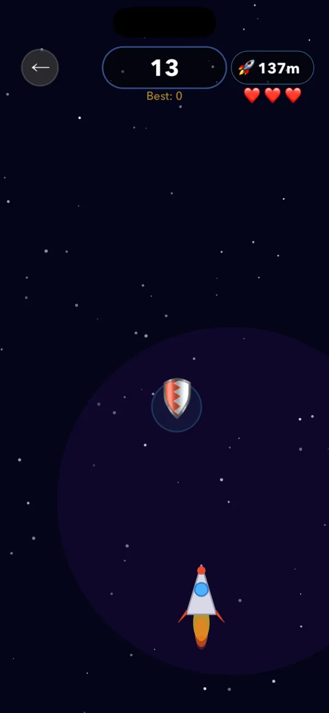
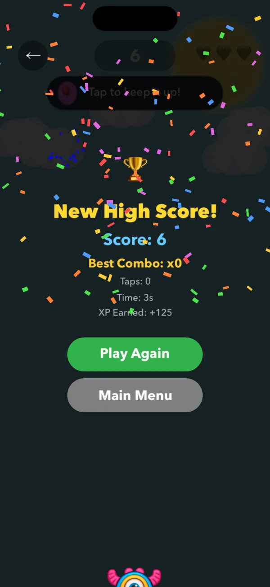

For iPhone and iPad. Requires iOS 15.0 or later.
Vision Quest Games
Six offline arcade and puzzle games for kids on iPhone and iPad.
Vision Quest Games is a collection of six kid-friendly games designed around visual tracking, color matching, and memory. Built for children ages 4 and up and their families, it runs offline on iPhone and iPad with no ads and no in-app purchases.
Free. No ads, subscriptions, or in-app purchases.

What it does
Tracking and color games
Catch falling planets across the screen in Space Explorer (with a Rocket Dodge bonus mode) and pop matching-color balloons in Balloon Adventure (with a Keepy Uppy bonus game). Both games are designed around visual tracking, color recognition, and hand-eye coordination.
Memory and maze puzzles
Match pairs of cards in Memory Master (including a Shell Game bonus mode) and guide a wizard through randomly generated labyrinths in Treasure Maze (with a Match-3 gem puzzle mode). These activities focus on visual memory, attention, and problem solving.
Runner and alchemy discovery
Jump obstacles and collect gems across five biomes with triple jumps and power-ups in Nitro Snail Runner. In Alchemy Lab, combine starting elements of Earth, Fire, Wind, and Water to unlock hundreds of combinations.
XP, levels, and badges
Earn experience points across all six games to level up from Apprentice to Master. Collect more than 50 achievement badges and stickers while tracking high scores on your device.
Offline and distraction-free
Includes adaptive procedural background music, no advertisements, and no in-app purchases. All six games and bonus modes work offline without an internet connection or user account.
How it works
Pick a game
Choose any of the six games or bonus modes from the main menu.
Play at your own pace
Complete rounds by tracking planets, matching colors and cards, navigating mazes, jumping obstacles, or combining elements.
Earn XP and badges
Gain experience points, unlock more than 50 badges and stickers, and advance from Apprentice to Master as you play.
Screenshots




Get Vision Quest Games
For iPhone and iPad. Requires iOS 15.0 or later. Questions are answered on the Help page, and the privacy policy explains what stays on your device.